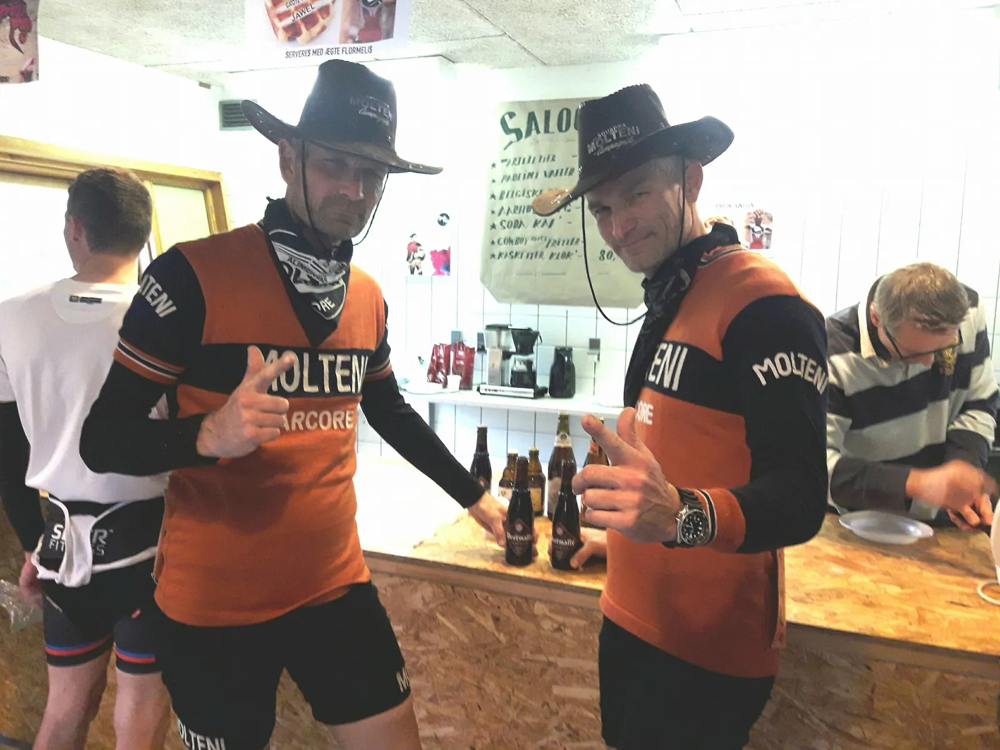

For a Few Dollars More

Skandale. Beskidte Grote Prijs sheriffer og korruption langt ind i DCU. Squadra Moltenis hårde halse Grane “Rattlesnake” Maaløe og Niels “SixShooter” Bjørnsteen – kom, så og skød – og var tæt på at blive frarøvet den dobbeltsejr ved Grote Prijs vol. IX, som de fortjente.
– For det første, var der problemer med at få vores cowboyhatte godkendt som cykelhjelm. Vi måtte flere gange fortælle, at hattene var godkendt af D.C.U – Dansk Cowboyder Union, men en meget emsig kommissær, mente ikke, at han havde hørt om dette. Det hjalp dog på kommissærerens hukommelse, da Niels “SixShooter” Bjørnsteen, sammen med Smith&Wesson, tog en venskabelig “snak” med ham, fortæller Grane “Rattlesnake” Maaløe.
For det andet viste det sig kort før start, at motionsfeltet var fyldt af illegale renagades fra Djævleøen, som burde køre i et helt andet felt.
– Den ene renagade-bastard efter den anden kom væltende hen mod motionsfeltet lige inden starten. Nogle kom endda væltende ind over indhegningen langt tid efter, at starten oprindelig skulle have været skudt i gang. Men de korrupte DCU-kommissærere gjorde ingenting. De var tydelig betalt med a Few Dollars More, lyder det fra Niels “SixShooter” Bjørnsteen
Starten gik, og både Grane og Niels kom godt fra start. De kæmpede bragt helt fremme i feltet gennem hele løbet. På sidste omgang satte de de afgørende skud ind: I Eldorado Minens dunkle gang, smed de den op på den store klinge – og kørte væk. Grane “Rattlesnake” og Niels “SixShooter” kunne krydse målstregen, som sikre vindere af Grote Prijs IX.
Her, mere end 24 timere efter løbet, forlyder det fra beskidte Grote Prijs sheriffer, at én af de illegale renagade-bastarder er blevet kåret som vinder. Og resultatlisen – ja, den kan de ikke finde. De leder stadig efter den i dommertårnet.
Det lugter af … a Few Dollars More…
Men dér tager de fejl. De illegale renagade-bastarder. De beskidte Grote Prijs sheriffer og de korrupte DCU-kommissærere. De gode, den onde og den grusomme – Grane “Rattlesnake” og Niels “SixShooter” ER vindere af Grote Prijs IX.
